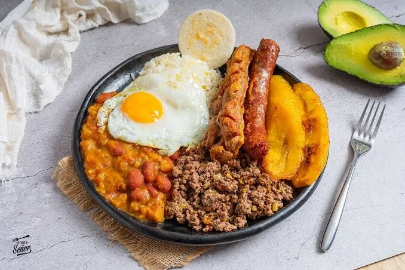

Bandeja paisa
Nació en las montañas antioqueñas como la comida de los arrieros, que necesitaban energía para jornadas largas. Hoy es el plato más famoso de Colombia y se sirve en una bandeja grande porque no cabe en un plato normal.
- Tiempo: 2 h 30 min (+ remojo)
- Porciones: 4
- Dificultad: Alta

Frijoles, arroz, carne molida, chicharrón, chorizo, huevo, maduro, aguacate y arepa.
Ingredientes
Frijoles
- 500 g de frijol cargamanto
- 1 zanahoria
- 1 plátano verde en trozos
Hogao
- 3 tomates maduros picados
- 4 tallos de cebolla larga picados
- 1 diente de ajo
- Comino, sal y aceite
Acompañantes
- 500 g de carne molida de res
- 500 g de tocino de cerdo con piel
- 4 chorizos antioqueños
- 2 plátanos maduros
- 4 huevos
- 2 aguacates
- 4 arepas pequeñas
- 2 tazas de arroz blanco cocido
Preparación
- Deja los frijoles en remojo la noche anterior. Al otro día cocínalos en olla a presión con agua nueva, la zanahoria y el plátano verde durante unos 45 minutos, hasta que estén blandos.
- Prepara el hogao: sofríe la cebolla y el ajo en un poco de aceite, agrega el tomate, sal y comino, y cocina 10 minutos a fuego bajo. Echa la mitad del hogao a los frijoles y déjalos espesar 15 minutos.
- Sofríe la carne molida con el resto del hogao y sal, revolviendo hasta que quede seca y suelta.
- Para el chicharrón, corta el tocino en tiras, ponlo en una olla con agua y sal y cocínalo hasta que el agua se evapore. Luego déjalo freír en su propia grasa hasta que esté dorado y crujiente.
- Fríe los chorizos, los maduros en tajadas largas y los huevos. Calienta las arepas.
- Arma la bandeja: arroz con el huevo encima, frijoles, carne molida, chicharrón, chorizo, maduro, aguacate en tajadas y arepa.
Míralo en video
Video: “Así se hace una bandeja paisa al estilo de Rosita Cocina”, canal Rosita Cocina en YouTube.